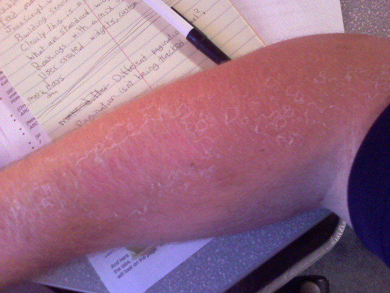
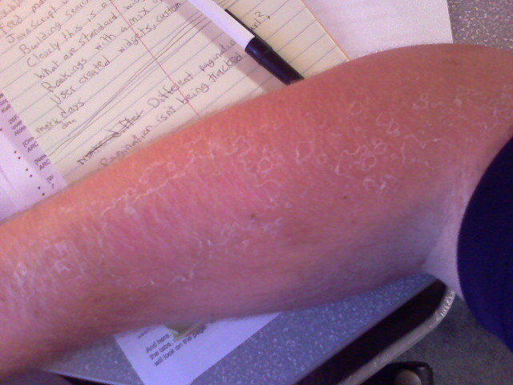
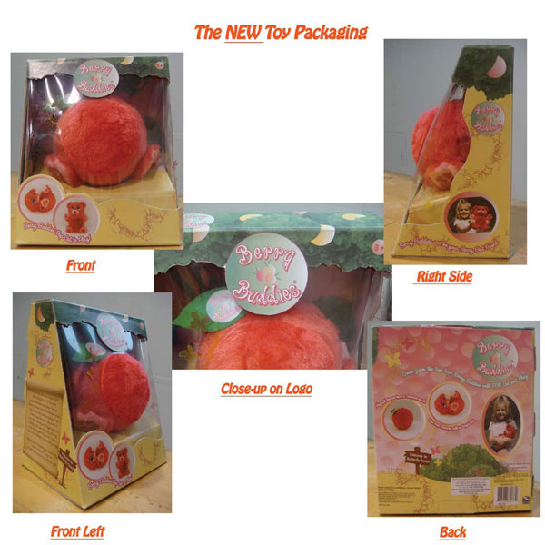

Peely Arm

The skin on my sunburnt arms is starting to itch and flake. Time to get some lotion for this dry skin.


The skin on my sunburnt arms is starting to itch and flake. Time to get some lotion for this dry skin.
The metro is stop and go today. Mostly it has been stopped. I decided I should take a picture of my face.
The metro is stop and go today. Mostly it has been stopped. I decided I should take a picture of my face.
… 10 years ago today!
That’s right today is the 10th anniversary of the introduction of the iMac. Check out Steve Jobs sporting a suit instead of his trademark jeans and a black turtleneck. This also marks the 10th anniversary of that god-awful hockey puck mouse which solidifies the fact that Apple can’t make a good mouse.
Take a look at that “screaming” 233mhz iMac that comes with a whopping 32MB of RAM. Watching old keynote speeches sure is amusing as technology just keeps on progressing.
(via Crunchgear)
The Filipino Cultural Association, which Kristina is a part of (and therefore me too), had their annual end-of-year picnic this past Sunday. We couldn’t have asked for a more perfect day as there were no clouds in sight and the sun was out in full force. Maybe the sun was a little too forceful as I forgot to put sunblock on my arms and face which were burnt to a crisp.
Everyone met at Centennial Park, Maryland, for food and games. There were plenty of burgers, hot dogs, and hungry college students but our poor chef Casper couldn’t cook them fast enough on the tiny charcoal park grill.
A life size hot dog with ketchup makes you feel like you were actually there.
Kristina put together a series of games dividing everyone up into 5 color “families”. The events included:
Paolo prepares to catch a water-filled balloon.
Bits and pieces on his glasses were all that was left of Daryl’s Apple pie.
Jen races to the finish line carrying an egg on a spoon.
An FCA picnic wouldn’t be complete without a tug-of-war match between the upper classmen and the lower classmen. It is tradition for the upper classmen to win and immediately tie an underclassmen to a nearby tree. This year sure didn’t disappoint, all in good fun of course!
Upperclassmen vs. lowerclassmen in tug-o-war.
They say it’s an honor to be tied to the tree.
At the end of the games everyone was too tired to care who won (it was the red team if you must know). Everyone had a good day out in the sun, laughing, having fun, and eating picnic food. This is Kristina’s last year in college so we probably won’t be back next year. Atleast we have these memories and the 495 pictures I took of the day, which was more fun for me than getting worked up over picnic games.

See more pictures from the day.
Román Cortés managed to create a dead-on recreation of Homer Simpson using nothing but HTML/CSS. To boot it is essentially a vector image that will scale if you increase the text size of your browser. Go to the page and press the control and the ‘+’ key at the same time to see what I mean.

The source code isn’t too pretty but for this spectacle it is certainly understandable. It just makes a good case that open technologies like SVG, which will make it easier to construct vector graphics out of XML code, need to be adopted much faster.
I was churning through my array of video podcasts this morning on my commute when I came across this 3 minute demo of InkSeine which stopped me dead in my tracks. InkSeine is a prototype ink application designed from the ground up to completely rethink how people interact with tablet computers. Gone are the menus that run across the top and instead are replaced with contextual gestures that can appear anywhere on the screen. Take a look at the video to see what I mean.
Technology like this would be really useful on a touch-screen mobile device, say maybe like an iPhone ? At any rate it is interesting to see new interactions with a computer minus the mouse and keyboard.
? At any rate it is interesting to see new interactions with a computer minus the mouse and keyboard.
Last weekend Kristina and I ventured over to the house of a family friend to take pictures of her kids playing with a toy. Kristina was designing toy packaging and needed shots of a child playing with the toy for the box art.
Scheduling the shoot during the late morning hours wasn’t the most helpful time in terms of lighting. Most of the shots had our subject squinting with dark shadows in her eyes. This could have been fixed by bouncing light onto her face from below using a reflector. Of course this didn’t occur to me until after the fact and I didn’t have a reflector with me. We made do with what we had and brought back some decent results.

After the official work was done and out of the way the kids wanted to play. I got some interesting shots of child play in action.
You can see more pictures in my Picasa web album.
On my commute home from work this evening I came across a lost thumb drive at one of the metro stations. I decided to take it home and see what was on it. As much as I would have loved to stumble across some top secret military documents or a bunch of MP3 files all that was on the 128mb drive was some miscellaneous e-mail messages. Being the good samaritan that I am, I decided to reconnect the device with it’s rightful owner.
The e-mails were all .msg files, the file extension for Outlook message files. Since I don’t have Outlook installed on any of my computers or a program to read them I had to find some freeware to do the job. After a quick Google search I found the no frills MSGView from Priasoft. The program is a single executable (with nothing to install) that prompts you to locate a .msg file upon starting it up. From there it decodes the message from the proprietary Microsoft e-mail format and shows you the contents. The biggest pain was that I had to close MSGView and re-open it if I wanted to look at another e-mail document.
I decided to sort the e-mails by file size in hopes of uncovering a conversation that sheds light on who the owner is. After a couple minutes of sleuthing around I quickly connected the dots and found the name and e-mail address of the likely thumb-driveless metro rider. I sent them an e-mail and have yet to hear back from them but I did learn about MSGView which comes in handy in situations like this.